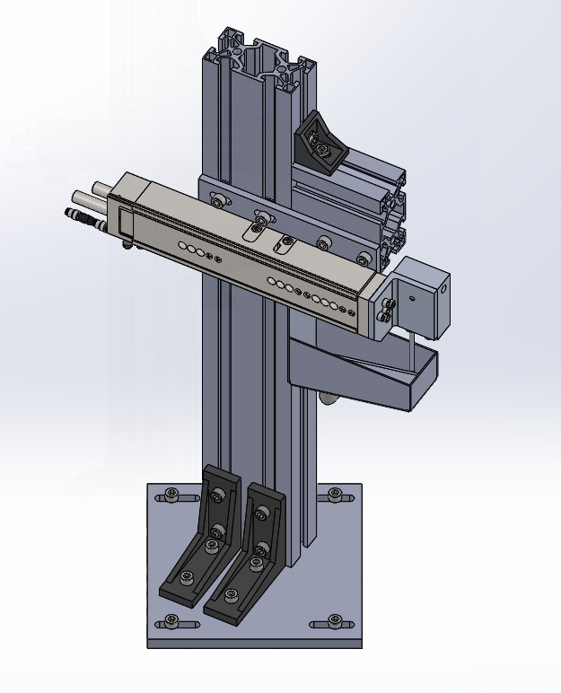
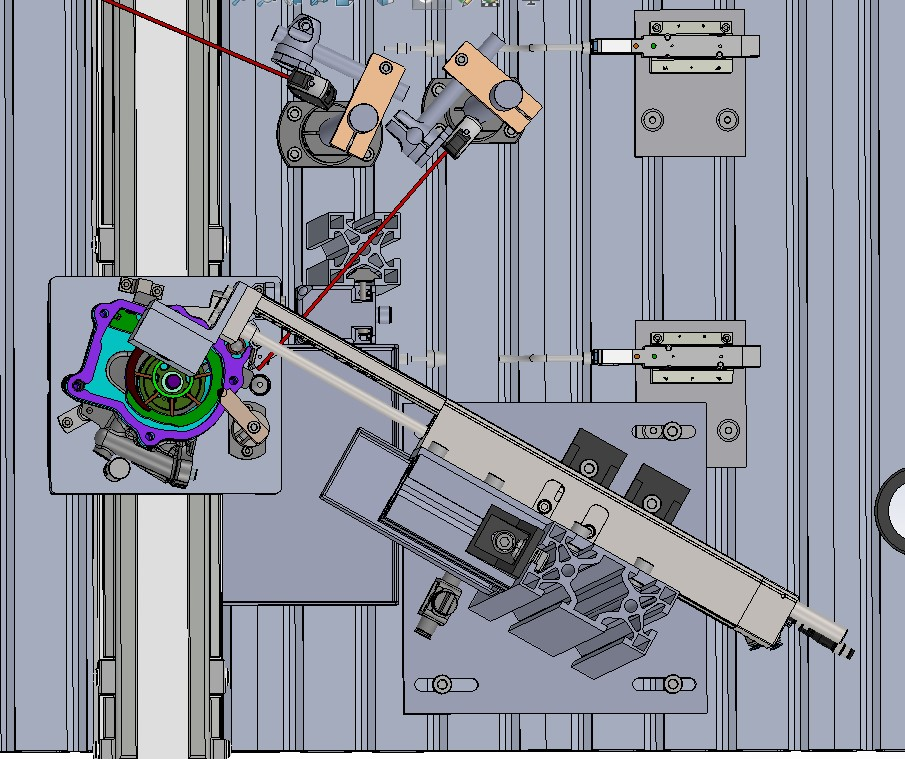
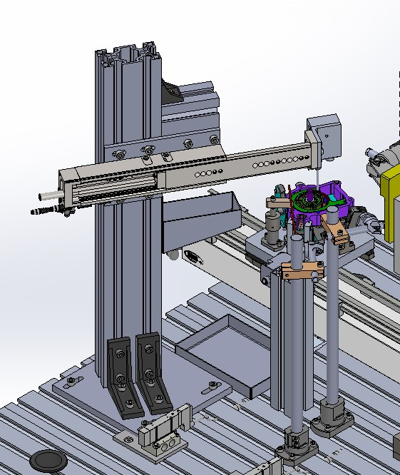
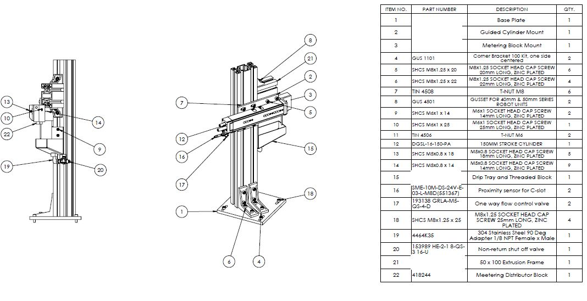
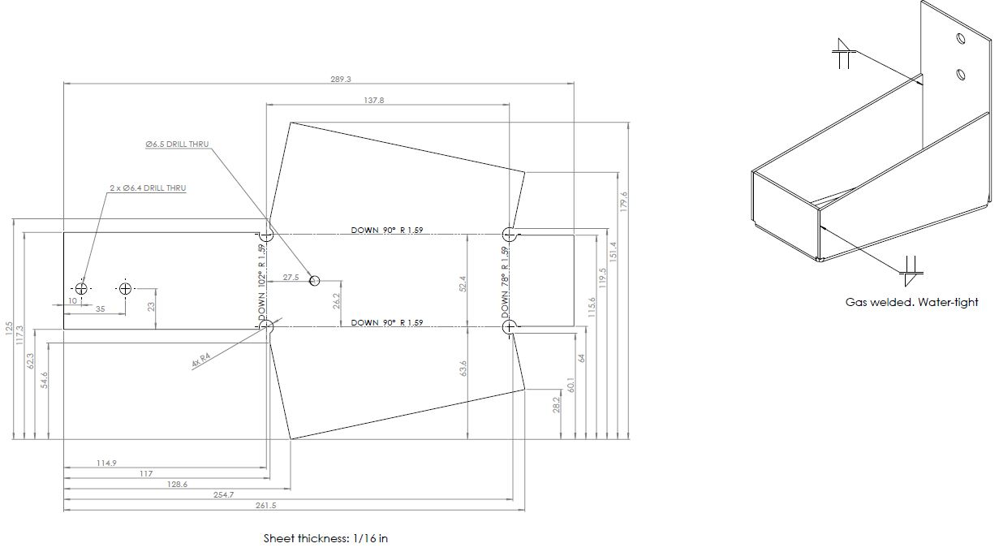

Automated Oiling Station
Designed an oiling station in an engine pump assembly line. The system dispensed oil to each pump passing through the station. The implementation of this design resulted in a reduction in the cycle time.
System Overview
The station consisted of a pnematic actuator, a positive displacement dispensing unit and a drip tray.
Sensing
Diffused-reflective photoelectric sensors were used to detect the presence of pumps in the station.
Actuation
A pneumatic actuator was used to position the dispensing unit over the pump prior to dispensing oil.
Drawings
Top level assembly drawing
Sheet Metal Drawing: Drip Tray